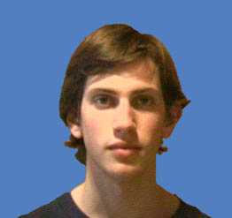

|
 |
Nombre: Pablo Barenbaum. Fecha de nacimiento: 09/01/1985. Vivo en Llavallol, Buenos Aires, Argentina. Actualmente estudio Ciencias de la Computación en la Universidad de Buenos Aires. Mi hobby podría expresarse brevemente como construcción de sistemas: conlang (o construcción de lenguajes), construcción de lenguajes de programación, construcción de culturas, de instrumentos, de sistemas musicales, de juegos de tablero y de varias otras cosas más. Disfruto especialmente de cosas como Borges (especialmente "Ficciones"), Xul Solar (el pintor argentino que fue un gran constructor de sistemas), Wassily Kandinsky, Queen, "Gödel, Escher, Bach" (de Douglas Hofstadter) y Les Luthiers; cada uno tiene una riqueza especial. |